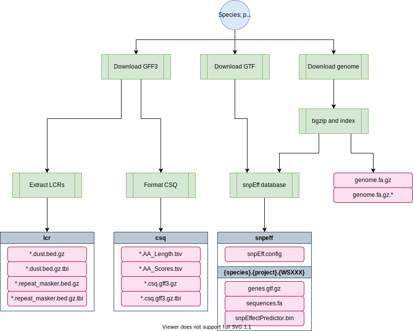

genomes-nf¶
This repo contains a nextflow pipeline that downloads, indexes, and builds annotation databases for reference genomes from wormbase. The following outputs are created:
- A BWA Index
- SNPeff annotation database
- CSQ annotation database
- Samtools faidx index
- A GATK Sequence dictionary file
Important
When adding a new WormBase version reference genome, especially for c_elegans it is essential that you use this pipeline instead of downloading and adding the files to QUEST manually. These files and this file structure are essential to many other pipelines in the lab.
Pipeline overview¶
>AAGACGACTAGAGGGGGCTATCGACTACGAAACTCGACTAGCTCAGCGGGATCAGCATCACGATGGGGGCCTATCTACGACAAAATCAGCTACGAAA
AGACCATCTATCATAAAAAATATATATCTCTTTCTAGCGACGATAAACTCTCTTTCATAAATCTCGGGATCTAGCTATCGCTATATATATATATATGC
GAAATA CGCG GA ATATA AAAA TCG TCGAT GC GGGC CGATCGA TAGAT GA TATATCGC
TTAAC ACTAGAGGGG CTATCGAC CGAA CT GACTA CT GCG AT AGCATCACG TGGGGGCCTATC CGAC AA TCAGCTACGAAAT
AGCCC TCTATCATAA TATAT T TCT TC AGCGA GA A A T TC ATAAAT TCGGGATCTAGC A CGC AT ATATATATGC
GCGAT TCTAC AG GCGGGGGA AT TA AA AAGAC CG TC AT GC AGCTGGGGGC ACG GA TA AT GA CTATATATATCGC
AATGC ACTAGAG GG CTATCGAC ACG A CT GACTA CT AGCGG AT AGCATCACGATGGG GCCTATC ACG C AA TCAGCTACGAAAT
ACTCC TCTATCA AA AAATATAT TCTC TC AGCGA GA AAACT TC TTCATAAATCTCGG ATCTAGC ATCG AT TATATATATATGC
TTAATA FCG GA ATATA AAA TCG TCGAT GC GG ACGATCGA TAGAT GA CTATATATATCGC
AACACGACTAGAGGGGGCTATCGACTACGAAACTCGACTAGCTCAGCGGGATCAGCATCACGATGGGGGCCTATCTACGACAAAATCAGCTACGAAAT
CTACCATCTATCATAAAAAATATATATCTCTTTCTAGCGACGATAAACTCTCTTTCATAAATCTCGGGATCTAGCTATCGCTATATATATATATATGC
parameters description Set/Default
========== =========== ========================
--wb_version wormbase version to build WS276
--projects comma-delimited list of `species/project_id` c_elegans/PRJNA13758,c_briggsae/PRJNA10731,c_tropicalis/PRJNA53597
--output Path of output folder /projects/b1059/data/

Software requirements¶
- Nextflow v20.01+ (see the dry guide on Nextflow here or the Nextflow documentation here). On QUEST, you can access this version by loading the
nf20conda environment prior to running the pipeline command:
module load python/anaconda3.6
source activate /projects/b1059/software/conda_envs/nf20_env
- If running pipeline on Quest, you must first load
singularityto access the docker container:
module load singularity
- If running locally, Docker must be installed. For further instructions, check out our docker guide
Usage¶
The pipeline can be run locally or on Quest. For example:
nextflow run main.nf -resume -profile local --wb_version=WS276 --projects=c_elegans/PRJNA13758
Parameters¶
-profile (optional)¶
Can be set to local or quest. The pipeline uses the andersenlab/genomes docker image built from env/genome.Dockerfile. The image is automatically built using github actions. See .github/workflows/build.yml for details.
Note
The default profile is set to -profile=quest
Default usage: downloading genome files from Wormbase¶
This is how the pipeline is mostly run, especially for C. elegans.
--wb_version (optional)¶
The wormbase version to build. For example, WS279. Default is WS276.
--projects (optional)¶
A comma-delimited list of species/project_id identifiers. A table below lists the current projects that can be downloaded. This table is regenerated as the first step of the pipeline, and stored as a file called project_species.tsv in the params.output folder (./genomes if working locally).
By default, the pipeline will generate reference genome indices and annotations for:
c_elegans/PRJNA13758- N2 based reference genomec_briggsae/PRJNA10731c_tropicalis/PRJNA53597
The current set of available species/projects that can be built are:
| species | project |
|---|---|
| b_xylophilus | PRJEA64437 |
| c_briggsae | PRJNA10731 |
| c_angaria | PRJNA51225 |
| a_ceylanicum | PRJNA231479 |
| a_suum | PRJNA62057 |
| a_suum | PRJNA80881 |
| b_malayi | PRJNA10729 |
| c_brenneri | PRJNA20035 |
| c_elegans | PRJEB28388 |
| c_elegans | PRJNA13758 |
| c_elegans | PRJNA275000 |
| c_latens | PRJNA248912 |
| c_remanei | PRJNA248909 |
| c_remanei | PRJNA248911 |
| c_remanei | PRJNA53967 |
| c_inopinata | PRJDB5687 |
| c_japonica | PRJNA12591 |
| c_sp11 | PRJNA53597 |
| c_sp5 | PRJNA194557 |
| c_nigoni | PRJNA384657 |
| c_sinica | PRJNA194557 |
| c_tropicalis | PRJNA53597 |
| d_immitis | PRJEB1797 |
| h_bacteriophora | PRJNA13977 |
| l_loa | PRJNA60051 |
| m_hapla | PRJNA29083 |
| m_incognita | PRJEA28837 |
| h_contortus | PRJEB506 |
| h_contortus | PRJNA205202 |
| n_americanus | PRJNA72135 |
| p_exspectatus | PRJEB6009 |
| o_tipulae | PRJEB15512 |
| p_redivivus | PRJNA186477 |
| s_ratti | PRJEA62033 |
| s_ratti | PRJEB125 |
| o_volvulus | PRJEB513 |
| p_pacificus | PRJNA12644 |
| t_muris | PRJEB126 |
| t_spiralis | PRJNA12603 |
| t_suis | PRJNA208415 |
| t_suis | PRJNA208416 |
--output (optional)¶
Path of output folder with results. Default is /projects/b1059/data/{species}/genomes/{projectID}/{WSbuild}/
Alternative usage: using manually selected genomes¶
This step is mostly for making the snpEff database and making sure that the gff is in the proper format for BCSQ annotation when you have a manually curated genome/gff file. This is common for C. briggsae and C. tropicalis and might start to be used if we want to annotate C. elegans wild isolates like CB4856.
--genome¶
Path to manually curated genome (for genomes not downloaded from wormbase)
--gff¶
Path to manually curated gff generated using the above genome (for genomes not downloaded from wormbase)
Output¶
Outputs are nested under params.output with the following structure:
c_elegans (species)
└── genomes
└── PRJNA13758 (project)
└── WS276 (build)
├── c_elegans.PRJNA13758.WS276.genome.dict (dict file)
├── c_elegans.PRJNA13758.WS276.genome.fa.gz (fasta)
├── c_elegans.PRJNA13758.WS276.genome.fa.gz.amb (bwa index)
├── c_elegans.PRJNA13758.WS276.genome.fa.gz.ann (bwa index)
├── c_elegans.PRJNA13758.WS276.genome.fa.gz.bwt (bwa index)
├── c_elegans.PRJNA13758.WS276.genome.fa.gz.fai (samtools faidx index)
├── c_elegans.PRJNA13758.WS276.genome.fa.gz.gzi (bwa index)
├── c_elegans.PRJNA13758.WS276.genome.fa.gz.pac (bwa index)
├── c_elegans.PRJNA13758.WS276.genome.fa.gz.sa (bwa index)
├── csq
│ ├── c_elegans.PRJNA13758.WS276.csq.gff3.gz (CSQ annotation GFF3)
│ ├── c_elegans.PRJNA13758.WS276.csq.gff3.gz.tbi (tabix index)
│ ├── c_elegans.PRJNA13758.WS276.AA_Length.tsv (protein lengths)
│ └── c_elegans.PRJNA13758.WS276.AA_Scores.tsv (blosum and grantham scores)
├── lcr
│ ├── c_elegans.PRJNA13758.WS276.repeat_masker.bed.gz (low complexity regions)
│ ├── c_elegans.PRJNA13758.WS276.repeat_masker.bed.gz.tbi (tabix index)
│ ├── c_elegans.PRJNA13758.WS276.dust.bed.gz (low complexity regions)
│ └── c_elegans.PRJNA13758.WS276.dust.bed.gz.tbi (tabix index)
└── snpeff
├── c_elegans.PRJNA13758.WS276 (tabix index)
│ ├── genes.gtf.gz (Reference GTF)
│ ├── sequences.fa (fasta genome (unzipped))
│ └── snpEffectPredictor.bin (snpEff annotation db)
└── snpEff.config (snpEff configuration file)
Notes¶
- The SNPeff databases are not collected together in one location as is often the case. Instead, they are stored individually with their own configuration files.
- The GFF3 files for some species are not as developed as C. elegans. As a consequence, the biotype is inferred from the Attributes column of the GFF. See
bin/format_csq.Rfor more details.
Warning
The updated csq-formated gff script needs to be updated for other species besides C. elegans (if running the default mode)